Fernandinho
mais acessadas
- Galileu violãoguitarraGuitarPropartiturasbaixocavacotecladobateriagaita
- Nada Além do Sangue violãoguitarraGuitarPropartiturasbaixocavacotecladobateriagaita
- Faz chover violãoguitarraGuitarPropartiturasbaixocavacotecladobateriagaita
- Caia Fogo violãoguitarraGuitarPropartiturasbaixocavacotecladobateriagaita
- Ainda Que a Figueira violãoguitarraGuitarPropartiturasbaixocavacotecladobateriagaita
- Pra Sempre violãoguitarraGuitarPropartiturasbaixocavacotecladobateriagaita
- Grandes Coisas violãoguitarraGuitarPropartiturasbaixocavacotecladobateriagaita
- Uma Nova História violãoguitarraGuitarPropartiturasbaixocavacotecladobateriagaita
- Seu Sangue violãoguitarraGuitarPropartiturasbaixocavacotecladobateriagaita
- Jesus, Filho de Deus violãoguitarraGuitarPropartiturasbaixocavacotecladobateriagaita
todas as músicas
- A
- A Alegria do Senhor violãoguitarraGuitarPropartiturasbaixocavacotecladobateriagaita
- A Ti seja a glória violãoguitarraGuitarPropartiturasbaixocavacotecladobateriagaita
- Abundante Chuva violãoguitarraGuitarPropartiturasbaixocavacotecladobateriagaita
- Adestra violãoguitarraGuitarPropartiturasbaixocavacotecladobateriagaita
- Agindo Deus violãoguitarraGuitarPropartiturasbaixocavacotecladobateriagaita
- Águas Vivas violãoguitarraGuitarPropartiturasbaixocavacotecladobateriagaita
- Ainda Que a Figueira violãoguitarraGuitarPropartiturasbaixocavacotecladobateriagaita
- Anjos e Querubins violãoguitarraGuitarPropartiturasbaixocavacotecladobateriagaita
- Ao Deus de Abraão violãoguitarraGuitarPropartiturasbaixocavacotecladobateriagaita
- Avivamento violãoguitarraGuitarPropartiturasbaixocavacotecladobateriagaita
- B
- Baruk Raba violãoguitarraGuitarPropartiturasbaixocavacotecladobateriagaita
- Batiza-me violãoguitarraGuitarPropartiturasbaixocavacotecladobateriagaita
- Bem Aventurado violãoguitarraGuitarPropartiturasbaixocavacotecladobateriagaita
- C
- Caia Fogo violãoguitarraGuitarPropartiturasbaixocavacotecladobateriagaita
- Caia Fogo v. teus sonhos violãoguitarraGuitarPropartiturasbaixocavacotecladobateriagaita
- Canta alegremente violãoguitarraGuitarPropartiturasbaixocavacotecladobateriagaita
- Cantarei ao Senhor violãoguitarraGuitarPropartiturasbaixocavacotecladobateriagaita
- Céu, Lindo Céu violãoguitarraGuitarPropartiturasbaixocavacotecladobateriagaita
- Chegou o Tempo violãoguitarraGuitarPropartiturasbaixocavacotecladobateriagaita
- Chorem violãoguitarraGuitarPropartiturasbaixocavacotecladobateriagaita
- Chuvas de Bençãos violãoguitarraGuitarPropartiturasbaixocavacotecladobateriagaita
- Como Eu Te Amo violãoguitarraGuitarPropartiturasbaixocavacotecladobateriagaita
- Cristo, Cordeiro de Deus violãoguitarraGuitarPropartiturasbaixocavacotecladobateriagaita
- D
- Dança da Chuva (acústico) violãoguitarraGuitarPropartiturasbaixocavacotecladobateriagaita
- Dançar Na Chuva violãoguitarraGuitarPropartiturasbaixocavacotecladobateriagaita
- Depois do Sol violãoguitarraGuitarPropartiturasbaixocavacotecladobateriagaita
- Derrama Tua Shekinah violãoguitarraGuitarPropartiturasbaixocavacotecladobateriagaita
- Desde a Antiguidade violãoguitarraGuitarPropartiturasbaixocavacotecladobateriagaita
- Deus É Soberano violãoguitarraGuitarPropartiturasbaixocavacotecladobateriagaita
- Deus Tem o Melhor Pra Mim violãoguitarraGuitarPropartiturasbaixocavacotecladobateriagaita
- Dias de Elias violãoguitarraGuitarPropartiturasbaixocavacotecladobateriagaita
- Dono Do Mundo ( 2 versão ) violãoguitarraGuitarPropartiturasbaixocavacotecladobateriagaita
- Dono do Mundo violãoguitarraGuitarPropartiturasbaixocavacotecladobateriagaita
- E
- Eis me Aqui violãoguitarraGuitarPropartiturasbaixocavacotecladobateriagaita
- Ele Me Ama violãoguitarraGuitarPropartiturasbaixocavacotecladobateriagaita
- Ele Vem violãoguitarraGuitarPropartiturasbaixocavacotecladobateriagaita
- Emanuel violãoguitarraGuitarPropartiturasbaixocavacotecladobateriagaita
- Eu Fui Comprado violãoguitarraGuitarPropartiturasbaixocavacotecladobateriagaita
- Eu Jamais Serei o Mesmo violãoguitarraGuitarPropartiturasbaixocavacotecladobateriagaita
- Eu Navegarei violãoguitarraGuitarPropartiturasbaixocavacotecladobateriagaita
- Eu Quero Amar violãoguitarraGuitarPropartiturasbaixocavacotecladobateriagaita
- Eu Te Louvarei violãoguitarraGuitarPropartiturasbaixocavacotecladobateriagaita
- Eu Vejo Uma Pequena Nuvem violãoguitarraGuitarPropartiturasbaixocavacotecladobateriagaita
- Eu Vou Subir a Montanha violãoguitarraGuitarPropartiturasbaixocavacotecladobateriagaita
- Eu vou abrir o meu coração violãoguitarraGuitarPropartiturasbaixocavacotecladobateriagaita
- Exaltarei Teu nome violãoguitarraGuitarPropartiturasbaixocavacotecladobateriagaita
- F
- Faz chover violãoguitarraGuitarPropartiturasbaixocavacotecladobateriagaita
- Fidelidade violãoguitarraGuitarPropartiturasbaixocavacotecladobateriagaita
- Firme Nas Promessas violãoguitarraGuitarPropartiturasbaixocavacotecladobateriagaita
- Fogo Consumidor violãoguitarraGuitarPropartiturasbaixocavacotecladobateriagaita
- Fogo Santo violãoguitarraGuitarPropartiturasbaixocavacotecladobateriagaita
- Foi Por Amor violãoguitarraGuitarPropartiturasbaixocavacotecladobateriagaita
- Fome de Ti violãoguitarraGuitarPropartiturasbaixocavacotecladobateriagaita
- Formoso És violãoguitarraGuitarPropartiturasbaixocavacotecladobateriagaita
- G
- Galileo violãoguitarraGuitarPropartiturasbaixocavacotecladobateriagaita
- Galileu violãoguitarraGuitarPropartiturasbaixocavacotecladobateriagaita
- Geração Eleita violãoguitarraGuitarPropartiturasbaixocavacotecladobateriagaita
- Geração de Samuel violãoguitarraGuitarPropartiturasbaixocavacotecladobateriagaita
- Glória a Deus violãoguitarraGuitarPropartiturasbaixocavacotecladobateriagaita
- Grande é o Senhor violãoguitarraGuitarPropartiturasbaixocavacotecladobateriagaita
- Grandes Coisas violãoguitarraGuitarPropartiturasbaixocavacotecladobateriagaita
- Grandioso És Tu violãoguitarraGuitarPropartiturasbaixocavacotecladobateriagaita
- H
- Há Poder violãoguitarraGuitarPropartiturasbaixocavacotecladobateriagaita
- Há Um Rio violãoguitarraGuitarPropartiturasbaixocavacotecladobateriagaita
- Há Um Rio violãoguitarraGuitarPropartiturasbaixocavacotecladobateriagaita
- Ha Um Rio violãoguitarraGuitarPropartiturasbaixocavacotecladobateriagaita
- Hosana violãoguitarraGuitarPropartiturasbaixocavacotecladobateriagaita
- I
- Infinitamente Mais violãoguitarraGuitarPropartiturasbaixocavacotecladobateriagaita
- J
- Já estou crucificado violãoguitarraGuitarPropartiturasbaixocavacotecladobateriagaita
- Jesus, Filho de Deus violãoguitarraGuitarPropartiturasbaixocavacotecladobateriagaita
- Jornada Feliz violãoguitarraGuitarPropartiturasbaixocavacotecladobateriagaita
- L
- Luz do Mundo violãoguitarraGuitarPropartiturasbaixocavacotecladobateriagaita
- M
- Mais Alto violãoguitarraGuitarPropartiturasbaixocavacotecladobateriagaita
- Mais Alvo Que a Neve violãoguitarraGuitarPropartiturasbaixocavacotecladobateriagaita
- Maravilhosa Graça violãoguitarraGuitarPropartiturasbaixocavacotecladobateriagaita
- Me Leva violãoguitarraGuitarPropartiturasbaixocavacotecladobateriagaita
- Medley: Nada Além do Sangue / Alvo Mais Que a Neve violãoguitarraGuitarPropartiturasbaixocavacotecladobateriagaita
- Meu Maior Prazer violãoguitarraGuitarPropartiturasbaixocavacotecladobateriagaita
- Mil Cairão violãoguitarraGuitarPropartiturasbaixocavacotecladobateriagaita
- N
- Nada Além do Sangue violãoguitarraGuitarPropartiturasbaixocavacotecladobateriagaita
- Não Há Outro violãoguitarraGuitarPropartiturasbaixocavacotecladobateriagaita
- Nova Criatura Sou violãoguitarraGuitarPropartiturasbaixocavacotecladobateriagaita
- O
- O Espírito de Deus está aqui violãoguitarraGuitarPropartiturasbaixocavacotecladobateriagaita
- O Hino violãoguitarraGuitarPropartiturasbaixocavacotecladobateriagaita
- O Mais Lindo Amor... violãoguitarraGuitarPropartiturasbaixocavacotecladobateriagaita
- O Meu Deus É Soberano violãoguitarraGuitarPropartiturasbaixocavacotecladobateriagaita
- Ora Vem violãoguitarraGuitarPropartiturasbaixocavacotecladobateriagaita
- Ora Vem violãoguitarraGuitarPropartiturasbaixocavacotecladobateriagaita
- P
- Pai de Multidões violãoguitarraGuitarPropartiturasbaixocavacotecladobateriagaita
- Perdão violãoguitarraGuitarPropartiturasbaixocavacotecladobateriagaita
- Poema de Salvação violãoguitarraGuitarPropartiturasbaixocavacotecladobateriagaita
- Pra Sempre violãoguitarraGuitarPropartiturasbaixocavacotecladobateriagaita
- Preciso de Ti violãoguitarraGuitarPropartiturasbaixocavacotecladobateriagaita
- Q
- Quero Te Obedecer violãoguitarraGuitarPropartiturasbaixocavacotecladobateriagaita
- R
- Rude Cruz violãoguitarraGuitarPropartiturasbaixocavacotecladobateriagaita
- S
- Santa Euforia violãoguitarraGuitarPropartiturasbaixocavacotecladobateriagaita
- Santo És Senhor violãoguitarraGuitarPropartiturasbaixocavacotecladobateriagaita
- Santo, Santo, Deus Poderoso violãoguitarraGuitarPropartiturasbaixocavacotecladobateriagaita
- Sara-me violãoguitarraGuitarPropartiturasbaixocavacotecladobateriagaita
- Se Deus É Por Nós violãoguitarraGuitarPropartiturasbaixocavacotecladobateriagaita
- Se não for pra te adorar violãoguitarraGuitarPropartiturasbaixocavacotecladobateriagaita
- Sede de Justiça violãoguitarraGuitarPropartiturasbaixocavacotecladobateriagaita
- Semelhantes a Jesus violãoguitarraGuitarPropartiturasbaixocavacotecladobateriagaita
- Senhor Jesus violãoguitarraGuitarPropartiturasbaixocavacotecladobateriagaita
- Seu Nome É Jesus violãoguitarraGuitarPropartiturasbaixocavacotecladobateriagaita
- Seu Sangue violãoguitarraGuitarPropartiturasbaixocavacotecladobateriagaita
- Som de Muitas Águas violãoguitarraGuitarPropartiturasbaixocavacotecladobateriagaita
- Somos um violãoguitarraGuitarPropartiturasbaixocavacotecladobateriagaita
- Sou Feliz violãoguitarraGuitarPropartiturasbaixocavacotecladobateriagaita
- Superabundou a Graça violãoguitarraGuitarPropartiturasbaixocavacotecladobateriagaita
- T
- Te Adorar violãoguitarraGuitarPropartiturasbaixocavacotecladobateriagaita
- Te Adorar (part Aline Barros) violãoguitarraGuitarPropartiturasbaixocavacotecladobateriagaita
- Temos Que Ser Um violãoguitarraGuitarPropartiturasbaixocavacotecladobateriagaita
- Teus Sonhos violãoguitarraGuitarPropartiturasbaixocavacotecladobateriagaita
- Tocou-me violãoguitarraGuitarPropartiturasbaixocavacotecladobateriagaita
- Todas As Coisas violãoguitarraGuitarPropartiturasbaixocavacotecladobateriagaita
- Totalmente Teu violãoguitarraGuitarPropartiturasbaixocavacotecladobateriagaita
- Tu És Fiel violãoguitarraGuitarPropartiturasbaixocavacotecladobateriagaita
- Tua Fidelidade violãoguitarraGuitarPropartiturasbaixocavacotecladobateriagaita
- Tua Glória a Brilhar violãoguitarraGuitarPropartiturasbaixocavacotecladobateriagaita
- Tudo É Possivel violãoguitarraGuitarPropartiturasbaixocavacotecladobateriagaita
- Tudo Entregarei violãoguitarraGuitarPropartiturasbaixocavacotecladobateriagaita
- Tudo o Que Eu Quero violãoguitarraGuitarPropartiturasbaixocavacotecladobateriagaita
- U
- Um Dia Em Tua Casa violãoguitarraGuitarPropartiturasbaixocavacotecladobateriagaita
- Uma Coisa Peço Ao Senhor violãoguitarraGuitarPropartiturasbaixocavacotecladobateriagaita
- Uma Nova História violãoguitarraGuitarPropartiturasbaixocavacotecladobateriagaita
- V
- Vento Impetuoso violãoguitarraGuitarPropartiturasbaixocavacotecladobateriagaita
- Y
- Yeshua violãoguitarraGuitarPropartiturasbaixocavacotecladobateriagaita
- Galileucompleta
- 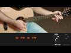Galileusimplificada
- 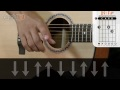Nada Além do Sanguecompleta
- 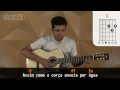Faz chovercompleta
- 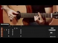Caia Fogocompleta
- 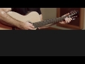Caia Fogosimplificada
- 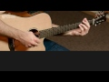Ainda Que a Figueirasimplificada
- 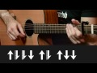Ainda Que a Figueiracompleta
- Grandes Coisassimplificada
- 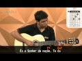Grandes Coisascompleta
- 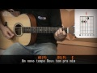Uma Nova Históriasimplificada
- 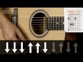Uma Nova Históriacompleta
- 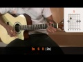simplificada

artistas relacionados
 Livres Para Adorar
Livres Para Adorar- André Valadão
 Davi Sacer
Davi Sacer- Thalles Roberto
- Mariana Valadão
- Nívea Soares
- Anderson Freire
- Trazendo a Arca
- Aline Barros
 Ministerio Trazendo a Arca
Ministerio Trazendo a Arca David Quinlan
David Quinlan- Paulo César Baruk
 Toque No Altar
Toque No Altar- Gabriela Rocha
- Heloísa Rosa
- Diante do Trono
- Kleber Lucas
- Eyshila
- Quatro Por Um
- Leonardo Gonçalves
- Ludmila Ferber
- Fernanda Brum
- Palavrantiga
- Rodolfo Abrantes
- Bruna Karla
- Oficina G3
 PG
PG- Cassiane
- Jesus Culture
- Damares
- Ana Paula Valadão
Comentários 181
- kaue: Em 19/08/2016 23:38
video aula seu sangue fernandinho
- Ednaldo Oliveira: Em 30/04/2016 13:48
e mesmo
- Joao Victor: Em 29/03/2016 19:34
Salve galera do cifra club
- Mesaque: Em 31/01/2016 20:56
Valeu ai pessual da #CIFRACLUB que Deus vos abencoe. Merecem...
- Joao Victor: Em 29/03/2016 19:35
slv
- Joao Victor: Em 29/03/2016 19:35
- Osmar: Em 02/11/2015 13:41
queria o Guitar pro completo da música Nada além do sangue, quem sabe fazer aí ?
- Mpanzu a kintina: Em 01/07/2015 09:22
mui bien
- Akoaan: Em 30/05/2015 17:48
muito bommmm parabens....
- Jose: Em 27/02/2015 00:26
eu queria pedir por favor uma video aula da musica jesus, filho de deus
- weverson: Em 09/02/2015 00:45
Não sei se observaram o que fizeram olha la na musica 50...isso e afronta a Deus...
- mateus.rezende.5245: Em 09/02/2015 01:21
verdade, alguém tem que tirar isso daí
- rhuan.pablo.96: Em 16/02/2015 17:58
Comentário removido
- mateus.rezende.5245: Em 09/02/2015 01:21

 Keylla
Keylla